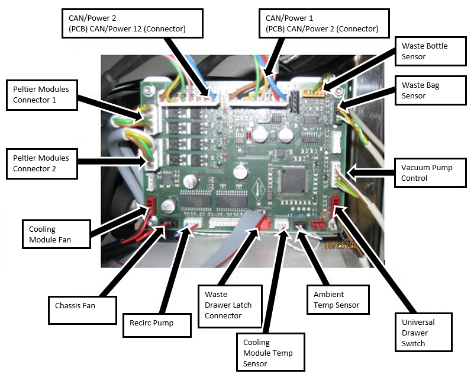

Parts and Materials Required
- Proper PPE
- Open-ended wrench, 8 mm
- COOLING MODULE, ASSY
Time Required
- 30 minutes
Removal Procedure
- Put on proper PPE.
- Drain the Cooling Module.
- Power down the system.
- Open the right side panel door
- Open the Universal Fluids Drawer.
 Locate the Cooling Module.
Locate the Cooling Module.- Place an absorbent pad on the floor near the Cooling Module.
- Disconnect the cables from the Cooling Module PCB according to the following illustration. Keep the cables marked to avoid confusion when plugging the cables back in.

Caution — Use special care when disconnecting the sensors. DO NOT pull on the sensor wires to disconnect the connector from the PCB. The sensor wires are fragile. 
Note — Connectors are keyed for orientation. Please make sure to install each connector in its proper orientation. 
- If the System has Holx UFD magnetic latches on the right side (as you face the instrument), you will need to remove them using a 7 mm wrench and a 2.5 mm hex key.
- Using an 8 mm open-ended wrench, remove four nuts and washers that secure the Cooling Module—two on the front of the module and two on the rear of the module.
- Lift the module off of the mounting studs and orient the module so that you can access the fluid line connections. See photo.
Note — Prior to disconnecting the fluid lines, use paper towels to catch any fluid that drips from the connection. Always disconnect the fluid lines in the order described to reduce fluid spills. - Label the input and output tubes so they are reconnected properly.
- Disconnect the fluid line from the input of the reservoir (left fluid connection) Push and twist counterclockwise to disconnect.
- Label the input and output tubes so they are reconnected properly.
- Disconnect the fluid line from the pump outlet (right fluid connection) by twisting the luer connection counterclockwise. Fluid may drip from tubing.
- Store the fluid return line (from pump outlet) in a fluid container on the system deck. This prevents fluid from draining out of the tubing onto the floor.
- Remove the module from the system. Tilt and lift the module out of the right side of the system.
Note — If the module will be returned, clean the module.


Replacement Procedure
- Open the Universal Fluid Drawer.
- Open the right-side panel.
- Open the Midbay Drawer.
- Place the Cooling Module into the system in an orientation so that you can access the fluid line connections. See photo.
- Connect the fluid line from the pump outlet (right fluid connection) by twisting the luer connection clockwise.
- Connect the fluid line from the input of the reservoir (left fluid connection)Push and twist clockwise to connect.
- Position all cables, except for Universal Drawer switch, ambient sensor, and chassis fan, behind the module. Cables can rest on top of vacuum pump tubing. This will make it easier to route the cables behind the module when connecting the cables to the PCB.
- Position the module onto the mounting studs. Make sure fluid lines are routed so that they are not pinched or kinked.
- Route all cables except for the chassis fan, the Universal Drawer switch, and the ambient temperature sensor, around the back of the module, as shown. Connect to the Cooling Module PCB.
Note — Connectors are keyed for orientation. Please make sure to install each connector in its proper orientation. - Using an 8 mm open-ended wrench, insert and tighten the four washers and nuts that secure the Cooling Module—two on the front of the module and two on the rear of the module.
- Close the Universal Fluid Drawer.
- Close the right side panel door.
- Install the Panther System firmware to the module.
- Fill the Cooling Module.


Verification
- Verify the temperatures of the Sample Bay and Reagent Bay.
- Visually inspect the fluid height within the Cooling Module.
- Verify Vacuum Pressure
- Verify that the Universal Fluid Drawer opens, closes, locks, and unlocks.
- Verify that the Waste Drawer opens, closes, locks, and unlocks.
- Verify that the waste bag presence sensor operates.
- Verify Liquid Waste Bottle level sensing.
- Verify that the right side Panther System cooling fan functions properly.
 button at the top of the page to send feedback, comments, or change requests.
button at the top of the page to send feedback, comments, or change requests.{kind=link}